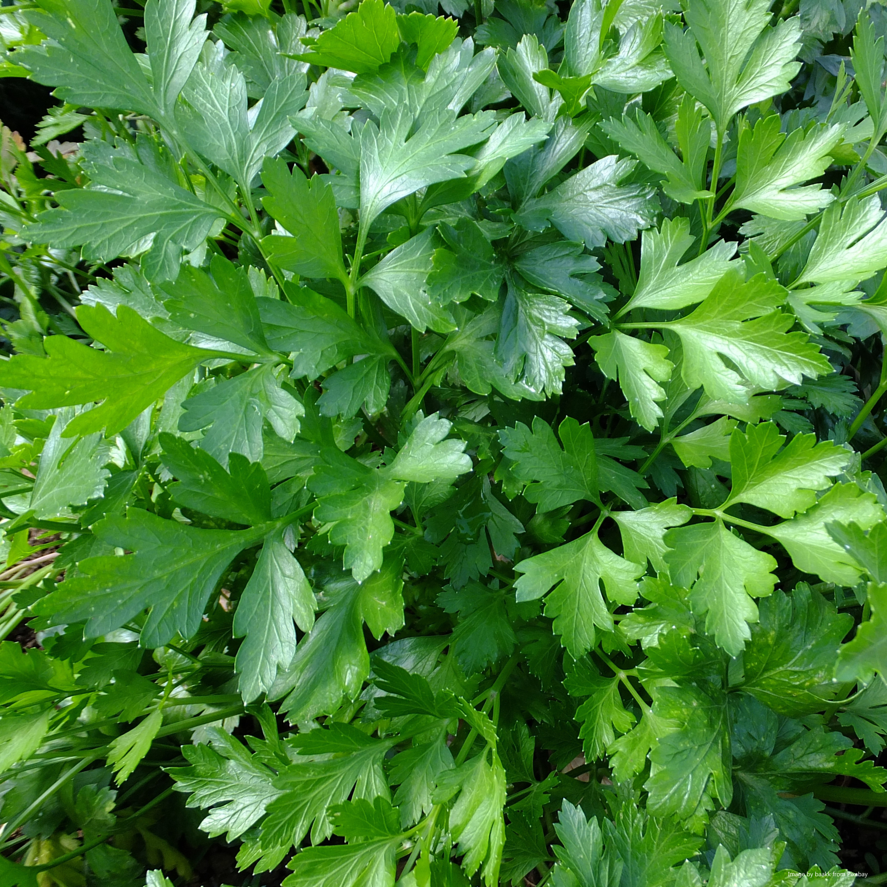
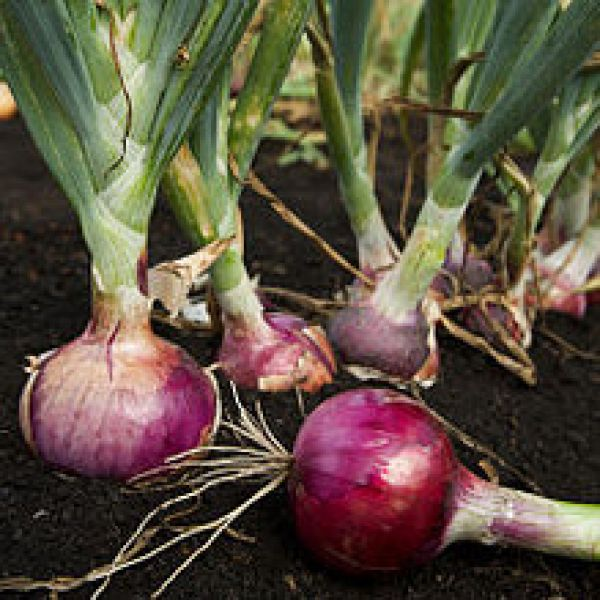
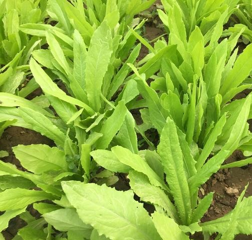

Outdoor Plants
Abbreviation
CN: Common NameBN: Botanical Name
| 1 | 2 | 3 | 4 | 5 |
| 1 | 2 | 3 | 4 | 5 |
| 1 | 2 | 3 | 4 |

CN: bean (runner) 'Enorma' ， 荷包豆, 花豆，大红豆 BN: Phaseolus coccineus 'Enorma' simplyseed suttons mr-fothergills thompson-morgan |
|

CN: parsley, 香芹 BN: Petroselinum crispum gardenersworld curved leaf gardenersworld flat leaf |

CN: 罗勒, 九层塔 - basil BN: Ocimum basilicum Link 1 |

CN: 洋葱 - onions BN: Allium Cepa allotment-garden |

CN: 油麥菜, Romaine Lettuce BN: Lactuca sativa var longifoliaf. Lam / Lactuca sativa var sativa |

CN: Carrot BN: Daucus carota 'Chantenay' RHS Gardeners' World gardeningknowhow |